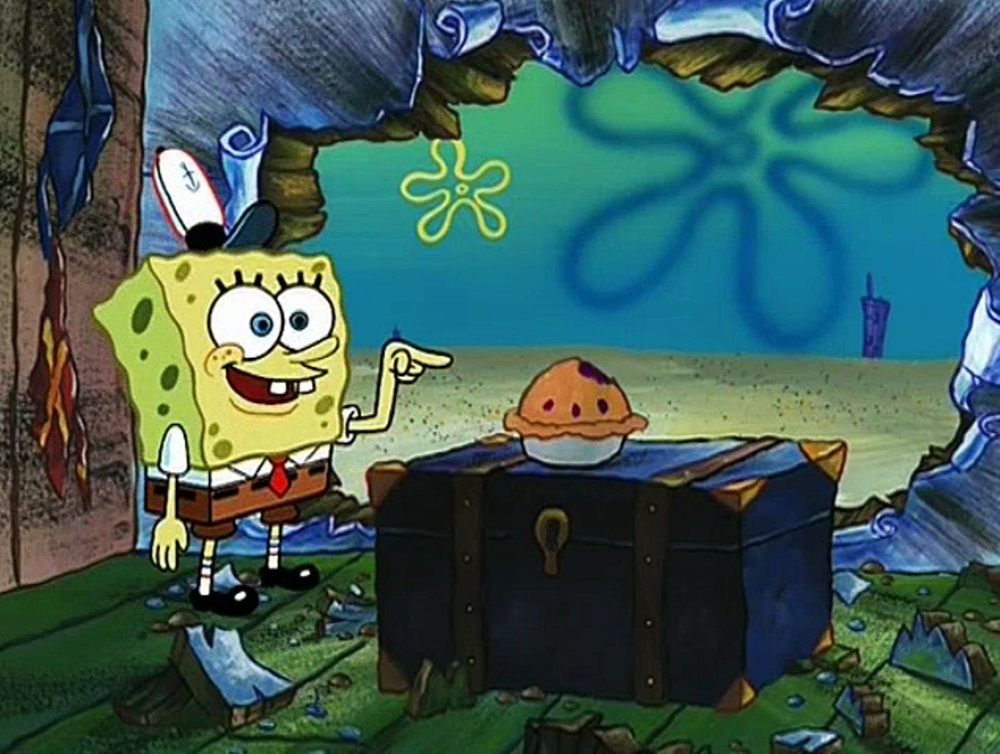

„Sobald das Team wächst und sich weiterentwickelt, ist es wichtig, auf die Kultur genauso zu achten wie auf andere wichtige Elemente der Infrastruktur, von denen Sie abhängen.“
Eine Kultur begründen
Die Kultur in einem Unternehmen wird häufig unterschätzt, doch gerade für die Rolle des Senior Engineering Leaders ist das entwickeln bzw. weiterentwickeln einer Kultur von hohem Wert. Die Kultur hat gerade in wachsenden Teams oder Unternehmen eine ebenso hohe Relevanz wie andere Infrastruktur-Maßnahmen.
Im ersten Moment klingen grundlegende Ideen wie „Struktur und Prozesse“ gerade für kleinere Startups abschreckend. Die kleinen und losen Projektteams reagieren häufig gelangweilt auf solche eher stellvertretend für große unbewegliche, langsame und innovationshemmende Unternehmen stehende Attribute.
In solchen Fällen sind Skeptiker des Kulturbegriffs eher mit Begrifflichkeiten wie „Lernen und Transparenz“ zu ködern. Denn das Lernen aus Erfolgen und Misserfolgen innerhalb der Organisation weiter zu geben und so mit der Zeit stabiler zu skalieren ist in jeder Hinsicht wünschenswert.

Hierbei ist wissenschaftliches Arbeiten besonders effektiv. Gemeint ist besonders das Testen von eigenen Theorien zum Thema Teamkultur. Dafür muss es eine Hypothese geben, welche es im Unternehmensalltag zu integrieren gilt. Dann folgt die Überprüfung, um ggf. mit der Hypothese zu scheitern.
Ein auftretendes Problem kann so iterativ gelöst werden. Die erste Lösung konnte sich nicht durchsetzen, oder stieß nicht auf Akzeptanz unter den Mitarbeitern. Dann bedarf es einer anderen Lösung. Dieses Scheitern ist erforderlich.
Ein Beispiel dafür wäre der Unternehmensweite Verzicht auf Titel. Dadurch wird die Unternehmenshierarchie sehr flach und Kollegen agieren auf Augenhöhe. Das suggeriert immerhin die Hypothese. Das Gegenteil ist häufig der Fall, denn wie Freeman1 bereits nachweisen konnte, ist der Verzicht von Strukturen in einer wachsenden Gruppe meist von verborgenen Strukturen begleitet.
Grund dafür ist laut Freeman die menschliche Kommunikation und dem, in diesem Fall gescheiterten, Versuch diese mit der Größe der Organisation zu skalieren. Freeman beschreibt einige Umstände unter denen unstrukturierte Gruppen funktionieren können:
-
Die Gruppe ist aufgabenorientiert, also in der Menge ihrer Tätigkeiten begrenzt. Das ist dann gegeben, wenn die Gruppe ein gemeinsames, klar definiertes und zeitlich terminiertes Ziel verfolgt, für dessen Erreichung eine eingeschränkte Menge an Tätigkeiten zur Verfügung stehen. Wie z.B. das herausbringen einer Zeitung.
-
Sie ist klein und homogen. Es entstehen Zielkonflikte und Informationsungleichgewichte, wenn die Gruppe zu groß und divers ist, diese Gruppen bergen dadurch ein höheres Konfliktpotential.

-
Es wird viel kommuniziert. Wenn die Gruppengröße steigt, dann steigt der Abstimmungsaufwand quadratisch. Informationen müssen aber verteilt werden, um besonders in wichtigen Phase alle in Entscheidungen mit einbeziehen zu können.
-
Der Spezialisierungsgrad ist gering. Es ist also niemand unverzichtbar für die Gruppe. In einer Gruppe aus Entwicklern würde das bedeuten, dass es ausschließlich Full-Stack-Entwickler gibt.

Freeman beschreibt hier ein weit verbreitetes Szenario junger Startups:
Die Rekrutierung erfolgt über soziale Netzwerke, dadurch entsteht häufig hohe Homogenität in der Gruppe. Eine Gruppe aus Full-Stack-Entwicklern hat einen geringen spezialisierungsgrad. Enge Zusammenarbeit an einem Ort sorgt für kurze Kommunikationswege und ein hohes Maß an Kommunikation. Ein Entwicklerteam ist alleinig ausführend und damit stark aufgabenorientiert. Obwohl also eine Gruppe betrachtet wird, welche - theoretisch in der Lage ist ohne Strukturen zu funktionieren, gilt es aufmerksam zu beobachten, denn junge Startups neigen dazu gute Entwickler bevorzugt zu behandeln und lassen somit verborgene Strukturen dort entstehen wo sie die Kommunikation und damit die Kultur der Organisation negativ beeinflussen können.
Weiterhin stellt sich später häufig das Problem der Skalierbarkeit auch abseits der Kommunikation. Spaghetticode ist ein potentes Beispiel dafür. Der code ist stark problemorientiert und die homogene Gruppe von Entwicklern benötigt wenig Struktur im Code. Die Entwickler sind austauschbar, da sie ähnliche Visionen, sowie Wissensstände haben.
Wächst nun aber die Organisation, dann muss der Code häufig refraktoriert werden, um Wartung und Entwicklung langfristig möglich zu machen. Es zeigt sich also, dass Strukturen in Organisationen langfristig für mehr Skalierbarkeit sorgen.
Den richtigen Zeitpunkt zu wählen stellt dabei die Schwierigkeit dar. Ein (noch) kleines Team durch unnötige Strukturen zu belasten und z.B. eine Kommunikationskette einzurichten, oder alle Mitglieder der Organisation in triviale Entscheidungen mit einzubeziehen wirkt eher verlangsamend. Die Entscheidung Strukturen zu etablieren, kann genauso zu spät getroffen werden. Bei kleinen Organisationen gewöhnen sich die Beteiligten schnell daran, ihre Meinung und Strategie an die Umwelteinflüsse anzupassen. Die kosten die Strategie bzw. die Meinung zu ändern nehmen mit wachsenden Mitarbeiterzahlen ebenfalls zu. Solche Änderungen verwirren und erzeugen hohen Klärungsaufwand.
Das kann durch eine Analogie aus der Realität gut verdeutlicht werden:
-
Junge Startups sind in diesem Sinne vergleichbar mit der Fahrt in einem Rennwagen. Das Fahrzeug befindet sich dicht am Boden, die Lenkung wirkt sich direkt auf die Fahrt aus und der Fahrer erhält eine ebenso direkte Rückmeldung. Die Fahrt ist schnell und der Fahrer hat die volle Kontrolle, denn er kann sofort reagieren. Es besteht zwar das Risiko eines Fehlers, doch selbst im Falle eines Unfalls bringt sich der Fahrer bloß selbst in Gefahr.
-
Wachsende Unternehmen sind schon eher ein Linienflug. Der Pilot trägt die Verantwortung für eine größere Menschengruppe. Das Flugzeug ist träger als ein Rennwagen und Lenkbewegungen müssen daher überlegter stattfinden, der Pilot behält aber immer noch ein relativ hohes Maß an Kontrolle.
-
Große Unternehmen werden schließlich zu einem Raumschiff. Der Pilot braucht für eine Kursänderung sehr lange und muss diese wohlüberlegt planen. Das Leben einer großen Besatzung hängt von dem Erflog des Fluges ab, dafür hat dieser eine sehr hohe Reichweite.
Bewertung der eigenen Rolle
Die Größe der Organisation ist wie in der oben beschriebenen Analogie entscheidend, bei der Bewertung der eigenen Rolle.
-
Je mehr Personen beteiligt sind, desto durchdachter müssen die Strukturen sein, damit sich alle in die gewünschte Richtung bewegen. Führungskräfte erlangen mit dem Etablieren von Strukturen mehr Kontrolle über die Organisation. Dabei ist es allerdings eher sinnvoll sich auf die einheitliche Definition der Ziele zu beschränken, als alle Entscheidungen von oben treffen zu wollen.
-
Mit steigendem Alter einer Organisation ist deren langfristiges Bestehen zwar wahrscheinlicher, es haben sich aber auch immer mehr Gewohnheiten etabliert.
-
Die Größe der bestehenden Infrastruktur gibt Aufschluss darüber wieviel Struktur notwendig ist. Je mehr Businessregeln und physische Infrastruktur existieren, desto mehr Klarheit bedarf es auch darüber wie damit umzugehen ist.
-
Die Prozesse und Strukturen sollten die Risikotoleranz der Organisation wiederspiegeln. Besteht ein hohes Risiko in einer stark regulierten Branche besteht die Aufgabe darin die Organisation so zu strukturieren, dass das Risiko tolerierbar bleibt.

Wenn eine Organisation größer und alter wird, dann wachsen auch die Strukturen mit.
“Ein funktionierendes komplexes System hat sich immer aus einem funktionierenden einfachen System entwickelt. Ein komplexes System, das von Grund auf entworfen wurde, funktioniert nie und kann auch nicht mit Hilfe von Reparaturen zum Laufen gebracht werden[..].”2
Die meisten Unternehmungen beginnen als sehr einfaches System, an dem wenige Personen beteiligt sind. Durch mehr Mitarbeiter, Regeln und Infrastruktur entwickelt sich diese Organisation zu einem komplexen System weiter. Überdesignen der Teamstruktur und der Prozesse bringt wenig Vorteile, solange die so entstehenden Strukturen nicht notwendig sind und das Team gut arbeitet. Erst wenn die Arbeit weniger beständig voranschreitet, ist es sinnvoll nachzuforschen. Es gilt die Stellen zu ermitteln, an denen sich die Struktur ändern muss.
Wissenschaftlich arbeiten heißt auch Fehler zu identifizieren, zu dokumentieren und langfristig zu beheben. Dazu müssen relevante Umgebungseinflüsse identifiziert werden. Ist es überhaupt effektiv die eigenen Strukturen auf diese Einflüsse hin anzupassen? Die Notwenigkeit besteht nicht zwingend, wenn die Kosten einen Fehler, welcher auf Grund eines Umwelteinflusses entsteht, in keiner Relation zu den Kosten stehen, die durch die Behebung verursacht werden, dann ist eine Strukturänderung unwirtschaftlich.
Aus Fehlern zu lernen hat sich bei Menschen als effektiver erwiesen, als aus Erfolg. Denn Erfolg kann mit Glück verbunden sein, wird aber, nicht selten fälschlicher Weise, mit eigener Leistung verknüpft. Misserfolg hingegen kann aus eigenen Fehlern entstehen, wird aber oft zu lange mit “Pech” abgetan. Es gilt also den Kontext zu verstehen, strukturelle Anpassungen kritisch zu betrachten, solange bis sich der daraus resultierende Erfolg langfristig wiederholen lässt.
Zusammenfassend ist es also genauso falsch in einer wachsenden Organisation komplett auf Strukturen zu verzichten, wie es falsch ist ein einer großen Organisation durch zu viel Struktur unbeweglich zu werden.
Der Kulturbegriff
“Bei Kultur geht es darum, wie Dinge erledigt werden, ohne dass die Leute darüber nachdenken müssen.”3
Die Kultur sind die unausgesprochenen Regeln einer Gemeinschaft. Die “menschlichen” Kulturen geben z.B. gewisse Verhaltensregeln in einer Gemeinschaft vor und beeinflussen dadurch maßgeblich das Verhalten und die Entscheidungen der Mitglieder der Gemeinschaft. Die einheitlichen Werte einer Gesellschaft sollen ohne einzelne Individuen zu diskriminieren die Bedürfnisse der Gruppe über die des Individuums stellen. Solche kulturellen Werte gibt es in jeder Organisation, unabhängig von deren Situation. Passen die Werte eines einzelnen Individuums nicht zu den Werten der Gemeinschaft, dann wird diesem Individuum das Leben und vor allem der Aufstieg innerhalb der Gemeinschaft schwerfallen. Die Gemeinschaft wird diesem Individuum gegenüber möglicher Weise weniger Akzeptanz zeigen.
In einem Unternehmen wurden die zentralen Werte, welche die Kultur wiederspiegeln, vermutlich durch die Gründer oder die ersten Mitarbeiter geschaffen. Diese Werte werden innerhalb der Organisation bekräftigt, anerkannt und belohnt.
Zentrale Werte anwenden
In einem Unternehmen ist es nicht nur wichtig, eine Kultur zu definieren, sondern die zentralen Unternehmenswerte auch auf das Team abzubilden. Hierbei ist es möglich, bestimmte Werte für das Team individuell zu interpretieren und zu gewichten.
Finden Sie die für Ihr Team wichtigen Faktoren
In manchen Teams ist es zielführend, wenn Diversität gefördert wird anstatt, dass bestimmte Begriffe in einem Screening-Prozess abgehakt werden können. So können Mitarbeiter sich eher auf ihre Potenziale konzentrieren.
Abstimmung innerhalb des Teams ist wichtig
Ist dem Team die Kernarbeitszeit wichtiger oder und eine harte Reglementierung? Oder ist man sich einig, dass die Arbeitszeit flexibler aufgeteilt werden kann? Grundsätzlich muss sich das Team nur einheitlich abstimmen darüber.
Kommunikation ist wichtig!
Das Team muss sich in regelmäßigen Abständen austauschen. Das ist wichtig, um eventuelle Diskrepanzen schnell zu erkennen und dagegen vorzugehen. Leidet zum Beispiel die Produktivität unter flexiblen Arbeitszeiten, ist dies unhaltbar und muss umgehend geändert werden. Hat sich ein Team gut selber strukturiert, ist es angebracht Lob auszusprechen. Dieser Zuspruch hilft den Teams und bringt sie näher zusammen.
Außerdem ist es wichtig, Mitarbeiter zu erkennen, die andere Werte teilen. Weichen diese von den Grundwerten ab, werden sie zunehmend zu einem Problem. Diese Mitarbeiter müssen frühzeitig erkannt werden und es muss eine Lösung gefunden werden, damit das Umfeld nicht langfristig beeinträchtigt wird. Darüber hinaus sollten diese Werte schon frühzeitig erklärt werden. Das Bewerbungsgespräch eignet sich dafür bestens, da man dem Bewerber sofort mitteilt, worauf er sich einlässt.
Seien Sie spezifisch!
Erarbeiten Sie Übereinstimmungen und Diskrepanzen im Team. Nicht jede Person passt in ein Team, das eng zusammenarbeitet. Ein Entwickler, der gerne auf sich alleine gestellt ist, wird es hier nicht leicht haben. Genauso ist auch ein analytischer Ansatz nicht immer der Richtige. Die Berücksichtigung von Empathie und Intuition ist manchmal auch von Vorteil.
Kulturelle Richtlinien schaffen
Es ist wichtig, in einem Team klare Richtlinien zu schaffen. Diese Richtlinien müssen zum Beispiel für Jobhierarchien oder Karrierepfade bestehen. Hierbei ist die Benutzung von bereits bestehenden Dokumenten von Vorteil, da viel Zeit und Arbeit gespart werden kann. Diverse Führungskräfte stellen Dokumente zur Verfügung. So ist zum Beispiel ein Dokument für Gehaltsrichtlinien bereits als Vorlage im Internet abzurufen, was dazu führt, dass eine Führungskraft nicht mit einem leeren Blatt anfangen muss. Hierbei ist es wichtig, die vorhandenen Dokumente im Vorhinein zu prüfen und ggf. auf das eigene Unternehmen anzupassen.
Jobhierarchie erstellen
Auf einige Punkte sollte bei der Erstellung einer Jobhierarchie geachtet werden
| Mitarbeiter einbinden | Arbeit mit Beispielen |
|---|---|
|
Bei der Erstellung einer Jobhierarchie ist der objektive Blick von Mitarbeitern auf die Hierarchie sehr hilfreich. Es können bereits früh Verständnisfragen geklärt werden und Verbesserungsvorschläge geäußert werden.
Außerdem können erfahrene Mitarbeiter die Erwartungen an die Kollegen meist besser definieren.
|
Es ist immer vorteilhaft, andere Jobhierarchien zu betrachten. Diese müssen nicht kopiert werden, können aber als Inspiration dienen. Manchmal ist es nämlich nicht einfach, die genauen Anforderungen zu definieren, vor allen Dingen auf hohen technischen Leveln.
|
| Details sind wichtig! | Frühe Aufstiegschancen |
|
Die Eigenschaften eines Mitarbeiters für eine bestimmte Position sollten detailliert beschrieben sein. Dies erleichtert zum einen die Einschätzung von Mitarbeitern, die eine Beförderung anstreben, aber auch den Einstellungsprozess.
|
Frühe Aufstiegschancen tragen zur Motivation neuer Mitarbeiter bei. Es bewegt sie dazu, schon direkt zu Beginn großen Einsatz zu zeigen. Wird einem Entwickler zum Beispiel in den ersten Jahren ein Aufstieg in Aussicht gestellt, so ist mit einer direkten Motivation und entsprechenden Arbeitsergebnissen zu rechnen.
|
| Verhalten der Hierarchien zum Gehalt | Schmale Gehaltsbänder in niedrigen Karrierestufen |
|
Es ist wichtig, klare Gehaltsbänder für verschiedene Stufen der Hierarchie zu definieren.
Hierbei gilt die Regel:
- Viele Hierarchiestufen -> schmale Gehaltsbänder |
„Viele Stufen und enge Gehaltsbänder sorgen dafür, dass Sie Leute schnell befördern und Ihnen Gehaltserhöhungen geben können, während die Mitarbeiter auf einer gewissen Stufe alle in etwa das Gleiche verdienen.“4

|
| Breite Gehaltsbänder bei höheren Karrierestufen | |
|
In höheren Karrierestufen ist es wichtig, dass Mitarbeiter auf einer Stufe dieselbe Verantwortung tragen, aber entsprechend Ihrer Leistung oder ihrem Talent bezahlt werden. Manchmal ist es vorteilhaft, dass sich Gehaltsbänder überlappen, zum Beispiel um einen talentierten Entwickler zu halten, der beste Arbeit abliefert, aber noch nicht bereit ist mehr Verantwortung zu übernehmen.
|
|
Quellen:
1 „The tyranny of structurelessness“ – Jo Freeman veröffentlicht im Jahre 1970
2 John Gall, „Systematics: How Really Work and Especially How They Fail” - The New York Times Book Co, 1975
3 Frederic Laloux - „Reinventing Organisations”
4 Karriereweg IT-Management: Wie aus Entwicklern und Techies erfolgreiche Manager werden - S. 199
Danke für Eure Aufmerksamkeit
Axel, Julius und Tim.

Hinweis zum Urheberrecht: Wir besitzen keine Rechte an den verlinkten Bildern!